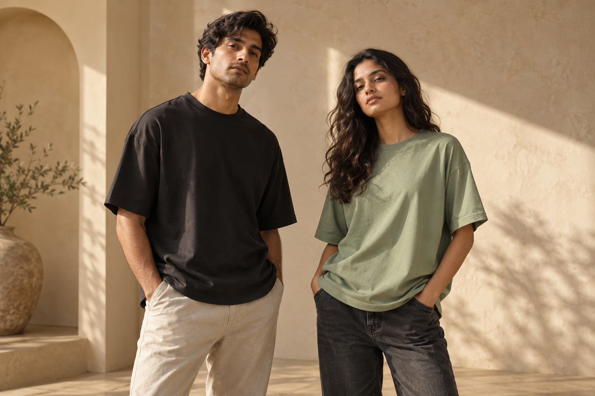
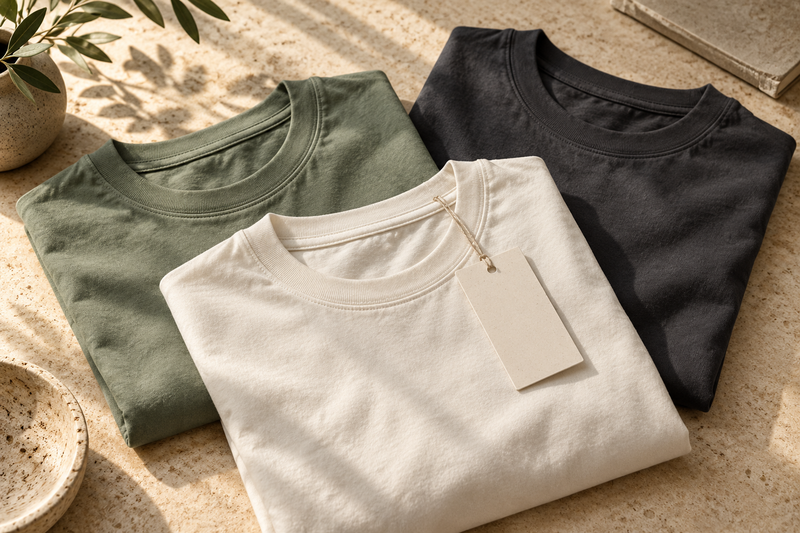

AUDIENCE HYPOTHESIS
The everyday outfit builder
Need: a tee that is easy to pair with familiar clothes.
Question: “Will this fit the way I expect?”
Response: fit-led content, clear product information and proposed prices visible before signup.
A considered launch for a fictional T-shirt brand. From the first audience hypothesis to the final click.

The brief: introduce Everyday and Oversized tees for men and women in India, build interest and make the next step easy.
Students and early-career adults looking for simple casual outfits. This is a working audience idea, not a surveyed segment.
Two fits and three quiet colours. Make fit and styling the story, without unsupported quality or sustainability claims.
At a proposed ₹200 cost per lead on a ₹12,000 media budget. A planning target, not a forecast or a result.
Need: a tee that is easy to pair with familiar clothes.
Question: “Will this fit the way I expect?”
Response: fit-led content, clear product information and proposed prices visible before signup.
Need: an oversized silhouette with a clear styling reference.
Question: “Oversized or just a bigger size?”
Response: side-by-side fit explanations and a practical article, without pretending sample garments were tested.
Public pages reviewed on 30 October 2026. No interviews, sales data or keyword-volume tools were used. These observations support creative hypotheses, not proof of market demand.
Original, downloadable campaign artwork with captions and clear calls to action. AI concept imagery meets editable vector layouts.
Finished: 3 feed artworks, a 5-slide carousel and 3 stories. Also included: 3 reel scripts and 30 days of draft captions. No reels have been filmed and no posts have been published.
| Day | Channel / format | Draft copy | Next step |
|---|
Search responds to a stated need. Social introduces a visual idea. Both lead to the same focused preview page.
Media only. No money spent. Creative costs and taxes excluded.
Two fits. Three colours. Find a starting point for your everyday wardrobe with KOVA.
Lead-generation plan. Start with a controlled search test after conversion QA. Match types are proposals, with no search-volume or CPC estimates from Keyword Planner.
Review actual search terms before excluding them. Negative matching needs a separate setup check.
Character limits checked against Google’s RSA guidance. Policy approval and live delivery are untested.
Search-friendly copy and useful emails, with a purpose for every message.

A practical guide to fit, proportions and the information to check before buying.
Read the finished article ↗Commercial phrases map to the drop preview. An informational styling query maps to the article. These are researched ideas, with no claimed volume, ranking or traffic.
Explore two T-shirt fits in Ink, Chalk and Sage. Discover the fictional KOVA launch, compare fit ideas and try the demo signup.
Implemented: descriptive titles, descriptions, one H1 per page, semantic sections, image alt text, internal links and a readable article URL. Search indexing and rankings have not been tested.
Introduce the idea and invite a first look.
Read email ↗02 / PREVIEWExplain fits, colours and proposed prices.
Read email ↗03 / LAUNCHBring people back to the landing page.
Read email ↗04 / FUTURE STOREA cart-recovery draft for a future store.
Read email ↗There are no live campaign results here. This lab uses a synthetic dataset to practise reporting and a separate local event log to test the landing page.
| Channel | Spend | Impressions | Clicks | Sessions | Leads | CTR | Session lead rate | CPL |
|---|
Example takeaway: 54 simulated leads fall short of the 60-lead planning goal. Search has a lower example CPL than Meta, but this invented dataset cannot justify a real budget decision.
Download the labelled sample data ↓page_view: landing page opens, with allowlisted UTM fields.
view_item: a visitor explores a chosen fit and colour.
select_content: a visitor opens the fit note.
generate_lead: the demo form passes validation and shows success.
Names follow a proposed GA4 plan. The implementation is a local demonstration, not a GA4 installation.
No email is saved. No events are sent to Google, Meta or a server. This log is separate from the simulated campaign table above.
Test the event flow ↗Use the prototype, inspect the assets and see how the pieces connect.
Experience the landing page ↗Download the campaign pack ↓Created for Mahima Mahajan’s digital marketing portfolio. KOVA is fictional. Campaign artwork, copy, code, dashboards and testing were made with ChatGPT and Codex assistance. Images are AI concepts, not verified products or customer photos.
Operations Studio is a separate business project. This campaign focuses on marketing.
No ad spend, published social posts, subscribers, purchases, customer research interviews or ranking gains. Reel deliverables are scripts, not finished videos. The landing page does not sell products or collect leads.
Read scope, sources and decisions ↓